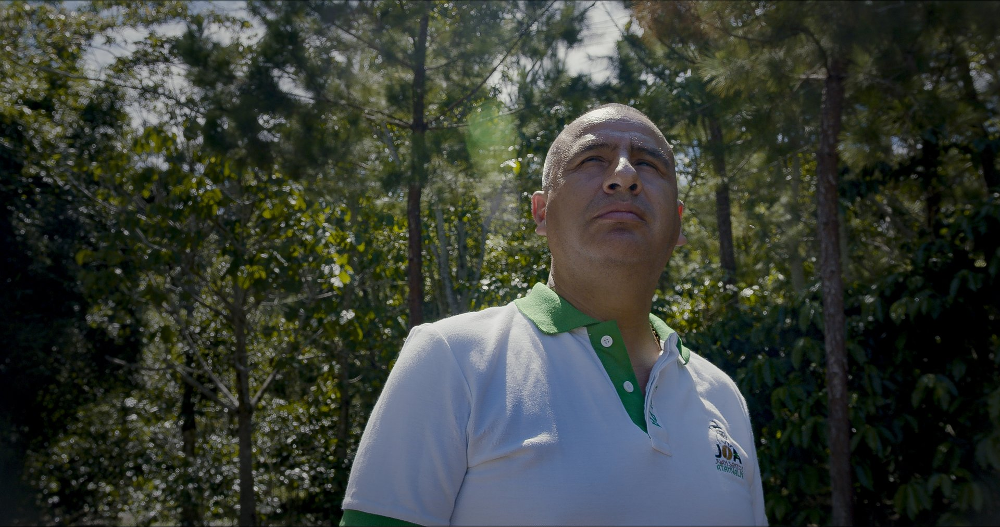
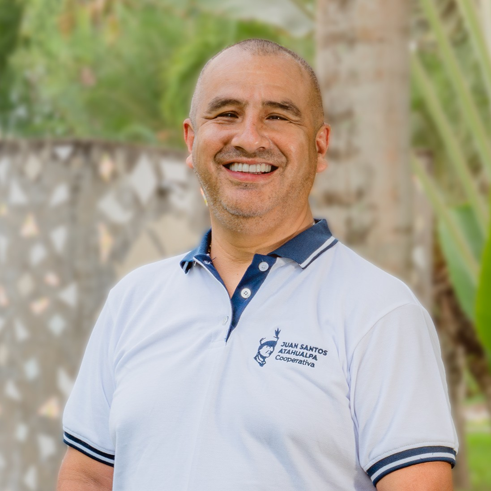

De pequeños productores a referentes del café peruano
Fundada en 2011 en Pichanaki, Junín, la Cooperativa Agraria Cafetalera Juan Santos Atahualpa nació de la visión de un grupo de 20 agricultores convencidos de que juntos podían lograr más. Hoy somos más de 671 socios distribuidos en los valles cafetaleros del Chanchamayo.
A lo largo de más de 15 años hemos construido relaciones comerciales directas con importadores en Alemania, Japón, Estados Unidos y otros destinos, eliminando intermediarios y garantizando precios justos para nuestros productores.
Nuestro compromiso con la calidad, la sostenibilidad y la innovación tecnológica nos ha permitido obtener certificaciones internacionales y convertirnos en un referente del café de especialidad peruano.

Misión, Visión y Valores
Los principios que guían cada decisión y cada cosecha de nuestra cooperativa.
Nuestra Misión
Ser una cooperativa sostenible y descentralizada, líder en la producción y exportación de cafés especiales, destacando por su trazabilidad, certificaciones y prácticas responsables que promuevan el desarrollo social y cultural de sus socios.
Nuestra Visión
Somos una cooperativa de productores de cafés de alta calidad con servicios de asistencia técnica y con una eficiente gestión orientada al desarrollo sostenible, elevando el nivel de vidasocioeconómico y cultural.
Historia y Trayectoria
Desde 2011, cada paso ha construido el camino hacia un café peruano de excelencia global.
Fundación
16 de octubre del 2011 con 20 socios. Nace la visión de unir pequeños productores para exportar café sin intermediarios.
Inicio del Acopio
La primera venta nacional dio comienzo a nuestra presencia en el mercado, consolidando el acopio de café de calidad.
Certificados
Primeros certificados de Comercio Justo y producción orgánica, acorde a nuestro compromiso sostenible.
Cruzando Fronteras
Primera venta internacional a Hamburgo, Alemania. Acceso a banca extranjera (financiadores de impacto).
Oficinas y Centro de Acopio
Premio Promperú: 1er puesto en Competitividad Exportadora Agronegocios. Ampliamos infraestructura.
Sumando Productores
La base social alcanzó 538 socios, contribuyendo al crecimiento sostenible y alcance comercial.
Crecimiento
Incremento al mercado suizo (8 contenedores, USD 820 mil). 634 socios y 2,200 hectáreas de producción.
Expansión Global
Nuevos mercados, innovación con drones y sensores, fortaleciendo beneficios para más de 634 familias.
Nuestro Equipo Directivo
Estructura de gobierno y operación de la Cooperativa Juan Santos Atahualpa.
-
Gerente General Juan Carlos Rios Gutierrez

-
Jefa de Dpto. de Sostenibilidad Pablo García
-
Certificación Pablo García
-
Resp. de Proyectos Maritza Rosales
-
Técnico de Proyectos y Certificación Equipo Técnico
-
-
Resp. de Área Técnica Brandon Rosales
-
Extensionistas de Campo Equipo de Campo
-
-
Resp. de Sistemas e Innovación Equipo de Sistemas
-
Asistente de Sistemas e Innovación Equipo de Asistencia
-
-
-
-
Jefa de Área de RR.HH. Karen Ruiz
-
Jefa de Dpto. Comercial Yolanda Maldonado
-
Resp. de Acopio y Compras Carlos Sánchez
-
Asistente de Acopio y Compras Equipo de Acopio
-
Estibador Equipo de Estiba
-
Operario de Tendal Equipo de Tendal
-
Chofer – Estiba Equipo de Transporte
-
-
-
Resp. de Laboratorio y Control de Calidad Yoselin Mendoza
-
Auxiliar de Control de Calidad Equipo de Calidad
-
-
Resp. de Trazabilidad Manuel Quispe
-
Asistente de Trazabilidad Equipo de Trazabilidad
-
-
Resp. de Almacén y Secado Equipo de Almacén
-
Asistente de Almacén y Secado Equipo de Almacén
-
Operario de Secado Equipo de Secado
-
-
-
-
Jefa de Dpto. de Contabilidad Raúl Alarcón
-
Contador de Costos Karin Ruiz
-
Asistente de Contabilidad Jazmín Ancco
-
Asistente de Patrimonio Equipo de Patrimonio
-
-
-
Jefe de Dpto. de Finanzas Juan Vera
-
Resp. de Administración y Operaciones Equipo de Operaciones
-
Tesorería Yaritza Cruz
-
-
-
Nuestras Certificaciones
Estándares que avalan nuestro compromiso con la calidad, la sostenibilidad y el comercio justo.
Fair Trade
Comercio justo certificado. Precios mínimos garantizados y prima social para proyectos comunitarios.
Orgánico
Certificación NOP (USDA) y EU Organic. Cero agroquímicos desde semilla hasta exportación.
Rainforest Alliance
Buenas prácticas agrícolas, conservación de biodiversidad y bienestar de los trabajadores.
Organic USDA
Sistema de gestión de calidad certificado. Procesos documentados y mejora continua en toda la cadena.
Naturland
Sistema de gestión de calidad certificado. Procesos documentados y mejora continua en toda la cadena.
Biossuisse
Sistema de gestión de calidad certificado. Procesos documentados y mejora continua en toda la cadena.
JAS
Sistema de gestión de calidad certificado. Procesos documentados y mejora continua en toda la cadena.
Impacto Social
Más allá del café, somos un motor de desarrollo para las comunidades del Valle del Perené.
Escuelas apoyadas con útiles y materiales educativos
Créditos agrícolas otorgados a socios productores
Asistencia técnica individual a todos los socios
Canastas navideñas distribuidas a familias socias